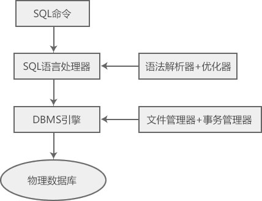

SQL是什么
SQL 是一种操作数据库的语言，包括创建数据库、删除数据库、查询记录、修改记录、添加字段等。SQL 虽然是一种被 ANSI 标准化的语言，但是它有很多不同的实现版本。
SQL 是关系型数据库的标准语言，所有的关系型数据库管理系统（RDBMS），比如 MySQL、Oracle、SQL Server、MS Access、Sybase、Informix、Postgres 等，都将 SQL 作为其标准处理语言。
此外，SQL 也有一些变种，就像中文有很多方言，比如：
1974 年，IBM 希望把 Codd 的想法变成现实，着手开发一款名为 System R 的数据库，并研发出一套结构化查询语句 SEQUEL，这就是 SQL 的雏形。System R 数据库于 1978 年第一次发布，用于科研和实验。
1979 年，Oracle 公司首先提供商用的 SQL，随后 IBM 公司也在 DB2 数据库中实现了 SQL。
1986 年 10 月，美国 ANSI 采用 SQL 作为关系型数据库管理系统的标准语言，紧接着国际标准组织（ISO）也将 SQL 采纳为国际标准。
1989 年，ANSI 发布了 SQL 标准的重大更新版本，以弥补旧版的不足，称为 ANSI SQL 89，该版本也被 ISO 采纳。
目前，市场上主要的关系型数据库都有自己的 SQL 变种， 但是它们都遵守 ANSI SQL 89 标准。
整个执行过程包含了多种组件，比如：
传统查询引擎能够处理所有的非 SQL 命令，但是 SQL 引擎并不能处理逻辑文件。
下图展示了 SQL 的体系结构：
ANSI 是 American National Standards Institute 的缩写，中文译为“美国国家标准协会”。
SQL 是 Structured Query Language 的缩写，中文译为“结构化查询语言”。SQL 是一种计算机语言，用来存储、检索和修改关系型数据库中存储的数据。SQL 是关系型数据库的标准语言，所有的关系型数据库管理系统（RDBMS），比如 MySQL、Oracle、SQL Server、MS Access、Sybase、Informix、Postgres 等，都将 SQL 作为其标准处理语言。
此外，SQL 也有一些变种，就像中文有很多方言，比如：
- 微软的 SQL Server 使用 T-SQL；
- Oracle 使用 PL/SQL；
- 微软 Access 版本的 SQL 被称为 JET SQL（本地格式）。
SQL 的用途
SQL 之所以广受欢迎，是因为它具有以下用途：- 允许用户访问关系型数据库系统中的数据；
- 允许用户描述数据；
- 允许用户定义数据库中的数据，并处理该数据；
- 允许将 SQL 模块、库或者预处理器嵌入到其它编程语言中；
- 允许用户创建和删除数据库、表、数据项（记录）；
- 允许用户在数据库中创建视图、存储过程、函数；
- 允许用户设置对表、存储过程和视图的权限。
SQL 简史
1970 年，IBM 的 Edgar Frank "Ted" Codd（埃德加·弗兰克·科德）博士描述了关系型数据库的模型，他因此被称为“关系型数据库之父”。1974 年，IBM 希望把 Codd 的想法变成现实，着手开发一款名为 System R 的数据库，并研发出一套结构化查询语句 SEQUEL，这就是 SQL 的雏形。System R 数据库于 1978 年第一次发布，用于科研和实验。
1979 年，Oracle 公司首先提供商用的 SQL，随后 IBM 公司也在 DB2 数据库中实现了 SQL。
1986 年 10 月，美国 ANSI 采用 SQL 作为关系型数据库管理系统的标准语言，紧接着国际标准组织（ISO）也将 SQL 采纳为国际标准。
1989 年，ANSI 发布了 SQL 标准的重大更新版本，以弥补旧版的不足，称为 ANSI SQL 89，该版本也被 ISO 采纳。
目前，市场上主要的关系型数据库都有自己的 SQL 变种， 但是它们都遵守 ANSI SQL 89 标准。
SQL 执行过程
当你在任何一款 RDBMS 中执行 SQL 命令时，系统首先确定执行请求的最佳方式，然后 SQL 引擎将会翻译 SQL 语句，并处理请求任务。整个执行过程包含了多种组件，比如：
- 查询调度程序；
- 优化引擎；
- 传统的查询引擎；
- SQL 查询引擎。
传统查询引擎能够处理所有的非 SQL 命令，但是 SQL 引擎并不能处理逻辑文件。
下图展示了 SQL 的体系结构：

SQL 命令
与关系型数据库有关的 SQL 命令包括 CREATE、SELECT、INSERT、UPDATE、DELETE、DROP 等，根据其特性，可以将它们分为以下几个类别。1) DDL - Data Definition Language，数据定义语言
对数据的结构和形式进行定义，一般用于数据库和表的创建、删除、修改等。| 命令 | 说明 |
|---|---|
| CREATE | 用于在数据库中创建一个新表、一个视图或者其它对象。 |
| ALTER | 用于修改现有的数据库，比如表、记录。 |
| DROP | 用于删除整个表、视图或者数据库中的其它对象 |
2) DML - Data Manipulation Language，数据处理语言
对数据库中的数据进行处理，一般用于数据项（记录）的插入、删除、修改和查询。| 命令 | 说明 |
|---|---|
| SELECT | 用于从一个或者多个表中检索某些记录。 |
| INSERT | 插入一条记录。 |
| UPDATE | 修改记录。 |
| DELETE | 删除记录。 |
3) DCL - Data Control Language，数据控制语言
控制数据的访问权限，只有被授权的用户才能进行操作。| 命令 | 说明 |
|---|---|
| GRANT | 向用户分配权限。 |
| REVOKE | 收回用户权限。 |
关注公众号「站长严长生」，在手机上阅读所有教程，随时随地都能学习。内含一款搜索神器，免费下载全网书籍和视频。

微信扫码关注公众号